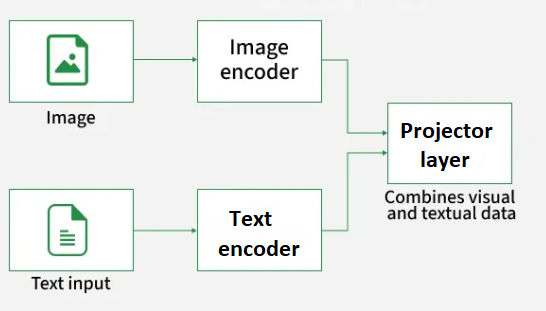
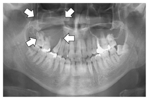

This lecture introduces multi-modal models, which process and integrate information from more than one data modality, such as text, images, audio, and video. We will focus on Vision-Language Models (VLMs), which are currently the most widely used class of multi-modal models. We will cover VLM architectures, benchmarking, and importance, followed by an example of finetuning a VLM on a custom dataset of medical images.
22.1 Introduction to Vision-Language Models
Vision-Language Models (VLMs) are multi-modal systems that jointly process and reason over visual (images, videos) and linguistic (text) information. By integrating the two modalities, VLMs can understand and communicate about visual content using natural language.
VLMs take both an image and a text prompt as input and generate text as output. VLM variants that can also output images have been developed as well. In this lecture, we will focus on VLMs that output text, since they are the most common type.

Figure: VLM structure. Source: [1].
Building datasets for VLMs requires collecting a large number of images and corresponding text, typically in the form of image captions or descriptive phrases. Several such very large datasets exist that have been essential for training modern VLMs and contain millions or billions of image-text pairs, with descriptions in English and other languages. For instance, the LAION-5B dataset has 5.8 billion image-text examples, and the PMD (Public Model Dataset) contains 70 million image-text examples.
During training, a VLM learns to map visual and textual representations into a joint embedding space. This mapping allows the model to associate visual features (shapes, colors, spatial relations) with linguistic concepts, enabling it to generalize to a wide range of vision tasks and perform zero-shot inference on unseen examples.
The example below illustrates a VLM performing tasks such as object localization, segmentation, visual question answering, and image learning with instructions. The user prompts are shown on the left, and the model responses are given on the right. As demonstrated in this example, VLMs not only interpret the semantic content of images, but also understand spatial relations in images, such as identifying relative positions of objects, or generating segmentation masks. VLMs can also output bounding boxes of objects, and perform other spatial tasks.
Figure: VLM prompts and responses. Source: [4].
In general, VLMs can perform various multi-modal tasks including:
Image and video captioning/summarization: generate context-aware descriptions of images or video frames.
Visual question answering (VQA): answer open-ended questions based on visual content.
Image-based reasoning: provide explanations or logical reasoning about visual scenes.
Multi-modal dialogues: engage in conversations involving visual inputs.
Text-to-image search: retrieve images, figures, or diagrams in documents that match a textual query.
Image generation: generate new images based on textual prompts.
22.2 VLM Architectures
Numerous architectures of VLMs have been proposed in recent years that employ different strategies to integrate visual and textual information. Two broad categories are VLM architectures with shared multi-modal embeddings and VLM architectures with fused multi-modal embeddings, illustrated in the figure.
Figure: VLM architectures. Source: [3].
22.2.1 VLMs with Shared Multi-modal Embeddings
VLM architectures with shared embeddings include the following main components [5].
Multi-modal inputs. Input modalities in VLMs include visual inputs (images, PDF documents, or videos) and textual inputs (captions, question-answer pairs, or instructions).
Encoding modalities. A vision encoder transforms the visual input into numerical representations, referred to as visual embeddings. The vision encoder in VLMs is commonly a variant of the Vision Transformer (ViT) architecture. A text encoder converts textual prompts into text embeddings. The text encoder is typically a Transformer-based encoder often pretrained on large text corpora.
Projection into a multi-modal embedding space. The visual and textual embeddings are next projected into a shared multi-modal embedding space. This step is achieved through a projector head (a.k.a. projector layer or just projector), which is usually implemented as a small Transformer block or a block of fully-connected layers. The projector aligns the visual and textual representations into a shared embedding space, allowing the model to reason simultaneously across images and language.
The shared embedding space enables VLMs to link textual concepts (e.g., cat) with corresponding visual evidence (a cat’s color or location in the image), allowing reasoning across both language and vision. For instance, the model understands “cat” not just as a word, but also as a visual object in the image.
One representative model of this type of VLM architecture is CLIP (Contrastive Language-Image Pretraining). It is one of the earliest models that introduced vision-language alignment through contrastive learning. CLIP employs both a vision encoder and a text encoder, and learns a shared embedding space in which images and their textual descriptions are semantically aligned. Contrastive learning in CLIP is employed to associate visual and textual content by maximizing the similarity between matched image and text pairs and minimizing the similarity between mismatched ones. In the figure below, the image encoder outputs image embeddings \(I_1, I_2, I_3, ..., I_N\) for each image in the batch, and the text encoder outputs text embeddings \(T_1, T_2, T_3, ..., T_N\) for each corresponding text in the batch. The model computes a similarity score \(I_i\cdot T_j\) between each image embedding (e.g., \(I_i\)) and text embedding (e.g., \(T_j\)) in the batch. The similarity scores are calculated as the dot product of the image and text embeddings, which equals the cosine similarity because CLIP normalizes the embeddings to unit length. As training progresses, the two encoders are updated so that image and text representations corresponding to similar concepts are drawn close to each other in the shared embedding space, while dissimilar concepts are pushed apart.
Figure: CLIP architecture. Source: [2].
The pretrained vision encoder of CLIP has been widely adopted as a vision encoder component in numerous later VLM variants.
22.2.2 VLMs with Fused Multi-modal Embeddings
Other VLM architectures fuse together image and text representations into joint multi-modal embeddings to enable more advanced visual reasoning. These models typically employ a text decoder network from a pretrained LLM, which generates a text output.
The following figure illustrates the workflow of this class of VLMs. The visual embeddings from the vision encoder are first matched by the multi-modal projector to the corresponding text embeddings of the LLM. The LLM decoder receives a combined representation consisting of visual embeddings (image tokens) from the projector and text embeddings (text tokens) from the user’s prompt or question. The LLM decoder serves as the text generation backbone, and using the combined image and text tokens, it generates a textual output in an autoregressive manner, one token at a time. Each new token is conditioned on previously generated tokens and on the fused multi-modal embeddings.
Training VLMs with fused vision and text embeddings typically involves multiple stages, as shown in the next figure. In the first stage, only the multi-modal projector (also referred to as fusion layer or adapter) is trained while keeping the image encoder and the LLM text decoder frozen. This is followed by a second stage that involves additional finetuning of the multi-modal projector and parts of the text decoder, while keeping the image encoder frozen.
Figure: VLM training. Source: [4].
In addition, in some VLM architectures, the vision encoder is also finetuned in the second stage to further improve cross-modal reasoning.
Representative models of this class of VLM architectures are BLIP and Flamingo, which introduced a cross-attention mechanism to fuse image and text embeddings [7] (this is similar to the cross-attention module connecting the encoder and decoder in standard Transformer networks). Cross-modal attention enables direct fusion of image and text embeddings into a single multi-modal representation, allowing the models to reason more efficiently over both modalities.
The LLaVA (Large Language and Vision Assistant) architecture introduced a different design, which replaced the cross-attention module with an MLP (Multi-Layer Perceptron) adapter for fusing multi-modal embeddings. Specifically, the MLP adapter is a small fully connected network that projects the visual tokens into the word embedding space of the LLM. The projected visual tokens are then concatenated with the text tokens into a fused representation that is passed to the text decoder.
These VLMs laid the foundations for the modern multi-modal foundation models, such as the Gemini (Google), GPT (OpenAI), Claude (Anthropic), and Mistral (Mistral AI) families of models. The modern multi-modal models typically employ MLP adapters for fusing image and text representations within a unified embedding space, and provide enhanced visual comprehension, reasoning, and dialogue capabilities.
Also, many open-source VLM alternatives have made this fused-architecture functionality widely accessible to the research community, and include LLaVA (Microsoft), Qwen-VL (Alibaba), LLaMA 3.2 Vision (Meta AI), InternVL (OpenGVLab), Pixtral (Mistral AI), and others.
22.3 Benchmarking VLMs
The performance of VLMs is assessed using multi-modal benchmarks that evaluate models on a variety of tasks, such as reasoning, visual question answering, document comprehension, video understanding, and other tasks. Most benchmarks consist of a set of images with associated questions, often posed as multiple-choice questions. Popular benchmarks are MMMU, Video-MME, MathVista, and ChartQA. MMMU is the most comprehensive benchmark, and contains 11.5K multi-modal questions that require knowledge and reasoning across different disciplines such as arts and engineering.
Several VLM-specific leaderboards provide comparative rankings across diverse metrics. Vision Arena ranks models based on anonymous voting of model outputs by human preferences. Open VLM Leaderboard provides comparative ranking of VLMs according to different metrics and average scores.
22.4 Importance of VLMs
Traditional computer vision (CV) models are constrained to learning from a predefined and fixed set of categories or objects for image classification or object detection (e.g., identify whether an image contains a cat or a dog). Moreover, these tasks require users to manually label a large number of images with a specific category for classification, or assign bounding boxes to multiple objects in each image for object detection, which is a tedious, time-consuming, and expensive process.
Conversely, VLMs are trained with more detailed textual descriptions of images, where, for example, an image can contain cats, dogs, and other objects, and the text description can provide additional contextual information (e.g., the cat is sitting, the dog is running, etc.). Learning from rich natural language descriptions allows VLMs to better understand visual scenes without limiting the learning to a narrow set of visual concepts comprising a fixed number of classes and objects. Also, it eliminates the need for exhaustive manual image labeling and extends VLMs’ utility beyond traditional CV tasks like classification or detection to new capabilities including reasoning, summarization, question answering, and interactive dialogue, by simply changing the text prompt.
VLMs have been applied across many domains and industries, and offer great potential to enhance visual perception [6]. For instance, they can be used to review videos and extract insights for industrial inspection and robotics (detect faults, monitor operations, identify anomalies in real time), safety and infrastructure monitoring (recognize floods, fires, or traffic hazards), retail and logistics (track empty shelves, detect misplaced items, identify supply-chain bottlenecks), and numerous other tasks.
22.5 Finetuning Example: Qwen3-VL on Radiology Images
This section presents an example of finetuning a VLM on a custom dataset containing medical images, including X-rays, CT scans, and ultrasounds showcasing medical conditions and diseases. Each image has a caption written by experts describing it. The dataset was created by the Unsloth team [8], and it is a smaller sampled version of the ROCO radiography dataset.
The goal is to finetune a general VLM which does not have in-depth knowledge for analysis of medical images, and to make the VLM a useful analysis tool for medical professionals.
By relying on parameter-efficient finetuning techniques, including quantization and LoRA, we will finetune the VLM using a single L4 GPU.
Install Dependencies
Let’s first install the libraries for VLM finetuning and import the required libraries and modules.
# Note that this line may require to Restart the kernel (Runtime > Restart Session) and run it one more time!pip install -Uqq transformers accelerate peft datasets qwen-vl-utils bitsandbytes pillow trl
ERROR: pip's dependency resolver does not currently take into account all the packages that are installed. This behaviour is the source of the following dependency conflicts.
cudf-cu13 26.6.0 requires pyarrow<24,>=19.0.0, but you have pyarrow 26.0.1 which is incompatible.
gradio 6.31.0 requires pillow<13.0,>=8.0, but you have pillow 13.0.0 which is incompatible.
Next, we will load the VLM Qwen3-VL-4B-Instruct. The first cell defines the BitsAndBytesConfig for loading the model parameters using 4-bit quantization, and afterward the model and processor for Qwen3-VL are loaded. The processor handles both the text tokenization and the image preprocessing. The parameters for BitsAndBytesConfig are explained in Lecture 20.
We will use LoRA to finetune the model. The parameters for the LoRA configuration are explained in Lecture 20. As seen from the output below, LoRA finetunes about 0.7% of the 4B parameters.
# Apply LoRA to the modelmodel = get_peft_model(model, lora_config)# Print the number of trainable parametersmodel.print_trainable_parameters()
trainable params: 33,030,144 || all params: 4,470,845,952 || trainable%: 0.7388
Load and Format the Dataset
The radiology dataset is loaded next. It consists of 1,978 samples containing images and text. The code in the following cells reformats the dataset for processing with Qwen3-VL and splits it into training and evaluation subsets. The last 100 samples are held out as an evaluation subset and are not used for training. Formatting prompts for VLMs is slightly more difficult than for LLMs, because user prompts should contain both text and corresponding images.
# Load the datasetdataset = load_dataset("unsloth/Radiology_mini", split="train")
# Print the number of samplesprint(f"Number of samples: {len(dataset)}")# Print the column namesprint(f"Dataset columns: {dataset.column_names}")
Number of samples: 1978
Dataset columns: ['image', 'image_id', 'caption', 'cui']
# Format the radiology dataset to chat formatdef format_radiology_sample(sample): messages = ["Describe this medical image in detail.","What are the key findings in this radiology image?","Analyze this medical scan and provide your observations.","What abnormalities or notable features do you see?"] instruction = random.choice(messages)return {"text": f"<|im_start|>user\n<|vision_start|><|image_pad|><|vision_end|>{instruction}<|im_end|>\n<|im_start|>assistant\n{sample['caption']}<|im_end|>","image": sample["image"]}
# Apply formatting to the Datasetformatted_dataset = dataset.map( format_radiology_sample, remove_columns=[col for col in dataset.column_names if col !='image'], desc="Formatting dataset", num_proc=4,)
# Split into train and evaluation datasetstrain_dataset = formatted_dataset.select(range(len(formatted_dataset) -100))eval_dataset = formatted_dataset.select(range(len(formatted_dataset) -100, len(formatted_dataset)))
Training samples: 1878
Validation samples: 100
Columns: ['image', 'text']
Data Collator
The next cell defines a data collator for Qwen3-VL that combines images and text into batches for processing by the VLM.
# Collate text and images into batches for Qwen3VLM# The code in this cell is not required in preparation for quizzesclass Qwen3VLDataCollator:def__init__(self, processor):self.processor = processorself.image_token_id = processor.tokenizer.convert_tokens_to_ids("<|image_pad|>")self.im_start_id = processor.tokenizer.convert_tokens_to_ids("<|im_start|>")self.im_end_id = processor.tokenizer.convert_tokens_to_ids("<|im_end|>")def__call__(self, features):# Extract text and images batch_texts = [f["text"] for f in features] batch_images = [f["image"] for f in features]# Process batch =self.processor(text=batch_texts, images=batch_images, padding=True, truncation=False, return_tensors="pt")# Create labels labels = batch["input_ids"].clone() labels[labels ==self.processor.tokenizer.pad_token_id] =-100# Mask image tokens and instructionfor idx, text inenumerate(batch_texts): input_ids = batch["input_ids"][idx]# Mask image pad tokens image_token_mask = (input_ids ==self.image_token_id) labels[idx][image_token_mask] =-100# Find assistant response assistant_marker ="<|im_start|>assistant\n" assistant_pos = text.find(assistant_marker)if assistant_pos !=-1: prompt_text = text[:assistant_pos +len(assistant_marker)] prompt_ids =self.processor.tokenizer.encode(prompt_text, add_special_tokens=False) prompt_length =min(len(prompt_ids), len(labels[idx])) labels[idx, :prompt_length] =-100# Mask final <|im_end|>try: im_end_positions = (input_ids ==self.im_end_id).nonzero(as_tuple=True)[0]iflen(im_end_positions) >0: labels[idx, im_end_positions[-1].item()] =-100except:pass batch["labels"] = labelsreturn batch
# Apply the collator classdata_collator = Qwen3VLDataCollator(processor)
Test the VLM Responses Before Finetuning
Let’s check the responses by Qwen3-VL to three sample images before finetuning the model. Notice that the generated responses by the model are quite accurate, and the model can understand the images fairly well. However, the descriptions are more general and explain what the images show, while the ground truth captions prepared by clinicians use concrete medical terms to describe the images.
# The code in this cell is not required in preparation for quizzesinstruction ="Describe this medical image in detail."# Test with 3 samplestest_indices = [0, 5, 10]for idx in test_indices:print(f"TEST EXAMPLE {idx}") test_image = dataset[idx]["image"] ground_truth = dataset[idx]["caption"]# Show image display_image = test_image.copy() display_image.thumbnail((300, 300)) display(display_image)# Format input messages = [{"role": "user", "content": [{"type": "image", "image": test_image}, {"type": "text", "text": instruction}]}]# Apply chat template text = processor.apply_chat_template(messages, tokenize=False, add_generation_prompt=True)# Process inputs inputs = processor(text=[text], images=[test_image], padding=True, return_tensors="pt").to(model.device)print("Generated Caption: ")with torch.inference_mode(): output = model.generate(**inputs, max_new_tokens=128, temperature=0.7, top_p=0.9, repetition_penalty=1.2, do_sample=True, use_cache=True, pad_token_id=processor.tokenizer.pad_token_id, eos_token_id=processor.tokenizer.eos_token_id) generated_text = processor.decode(output[0], skip_special_tokens=True)# Extract assistant's responseif"assistant"in generated_text: parts = generated_text.split("assistant") response = parts[-1].strip() iflen(parts) >1else generated_textelse: response = generated_textprint(response)print("\nGround Truth:")print(ground_truth)
TEST EXAMPLE 0

Generated Caption:
This is a panoramic radiograph of the human head and neck, specifically showing the maxillofacial region with emphasis on the dentition.
**Overall View:**
The image captures both the upper (maxillary) and lower (mandibular) jaws from an anterior-posterior perspective, providing a comprehensive view of all teeth, surrounding bone structures, and adjacent soft tissues. The grayscale contrast highlights areas of varying density — bones appear whiter than softer tissues or air-filled spaces.
---
**Key Features Indicated by Arrows:**
There are four white arrows pointing to specific anatomical landmarks:
1. **Arrow 1 (Top Left
Ground Truth:
Panoramic radiography shows an osteolytic lesion in the right posterior maxilla with resorption of the floor of the maxillary sinus (arrows).
TEST EXAMPLE 5
Generated Caption:
This is a grayscale angiographic image, likely from a cardiac catheterization procedure, showing the proximal portion of the left arm and thoracic vasculature.
**Key Anatomical Structures:**
1. **Subclavian Artery:** A large, darkly contrast-filled vessel arching across the top part of the frame. It originates near the shoulder region and curves toward the heart.
2. **LIMA (Left Internal Mammary Artery):** Labeled with text at lower-left corner, it appears as an artery branching off or running parallel to other vessels below the subclavian. The arrow points directly
Ground Truth:
Anteroposterior coronary angiographic view of the subclavian artery and left internal mammary artery (LIMA), showing the proximal LIMA compression and severe flow interruption associated with the hyperabduction of left arm (The arrow indicates the area of the compression and the flow interruption.)
TEST EXAMPLE 10
Generated Caption:
This is a grayscale ultrasound image, captured from an obstetric (OB) examination using a Medison Extreme 3D5-8EK transducer. The date and time of the scan are displayed as “10-05-2012” at “11:36:15”, with imaging parameters including MI = 0.7 and TIB = 0.2.
The image shows a cross-sectional view of what appears to be a pregnant uterus or fetal structures within it. A large central region dominates the frame, showing heterogeneous echotexture — areas of varying brightness indicating different tissue densities.
Ground Truth:
Ultrasound shows irregular endometrial contour with typical adhesion appearnace.
VLM Finetuning
Similar to Lecture 20, we will use Supervised Finetuning (SFT) to refine the model parameters on the radiology dataset. The training arguments are explained in Lecture 20.
Finetuning the model took about 15 minutes on an L4 GPU, where each of the 40 steps used 2x16 samples, i.e., in total 1,280 samples were used out of the 1,878 available samples in the training dataset. Training on a T4 GPU would take longer, and it would require changing the precision from the currently used bfloat16 to float16 (i.e., dtype=torch.float16 when loading the model, and fp16=True instead of bf16=True in SFTConfig), as bfloat16 is not supported by T4 GPUs.
# Trainingtrainer.train()
[transformers] The tokenizer has new PAD/BOS/EOS tokens that differ from the model config and generation config. The model config and generation config were aligned accordingly, being updated with the tokenizer's values. Updated tokens: {'pad_token_id': 151643}.
# The code in this cell is not required in preparation for quizzesinstruction ="Describe this medical image in detail."# Test with the same 3 samplestest_indices = [0, 5, 10]for idx in test_indices:print(f"TEST EXAMPLE {idx}") test_image = dataset[idx]["image"] ground_truth = dataset[idx]["caption"]# Show image display_image = test_image.copy() display_image.thumbnail((300, 300)) display(display_image)# Format input messages = [{"role": "user", "content": [{"type": "image", "image": test_image}, {"type": "text", "text": instruction}]}]# Apply chat template text = processor.apply_chat_template(messages, tokenize=False, add_generation_prompt=True)# Process inputs inputs = processor(text=[text], images=[test_image], padding=True, return_tensors="pt").to(inference_model.device)print("Generated Caption: ")with torch.inference_mode(): output = inference_model.generate(**inputs, max_new_tokens=128, temperature=0.7, top_p=0.9, repetition_penalty=1.2, do_sample=True, use_cache=True, pad_token_id=processor.tokenizer.pad_token_id, eos_token_id=processor.tokenizer.eos_token_id) generated_text = processor.decode(output[0], skip_special_tokens=True)# Extract assistant's responseif"assistant"in generated_text: parts = generated_text.split("assistant") response = parts[-1].strip() iflen(parts) >1else generated_textelse: response = generated_textprint(response)print("\nGround Truth:")print(ground_truth)
TEST EXAMPLE 0
Generated Caption:
Cone beam computed tomography (CBCT) images of the maxillary and mandibular arches showing multiple retained root fragments on radiographs at 4 years post-surgery, indicated by arrows. The CBCT scans showed that only one fragment was removed from a tooth with an endodontic filling; therefore it is recommended to remove all remaining foreign material or bone grafts within approximately three months after surgery. In addition, there are no signs of osteomyelitis around these areas. No other complications were observed during follow-up for up to five years following surgery. All patients have been followed up annually since then. Thereafter,
Ground Truth:
Panoramic radiography shows an osteolytic lesion in the right posterior maxilla with resorption of the floor of the maxillary sinus (arrows).
TEST EXAMPLE 5
Generated Caption:
Intraoperative venous occlusion of the LIMA to IMA graft (arrow) due to anatomic mismatch between a 4-mm and 3.5- or 2.7-millimeter diameter vessel at proximal portion, leading to thrombosis within hours after implantation. The patient was successfully managed with revision surgery including suture ligation of nonviable myocardial segments as well as revascularization using left internal mammary artery bypasses from distal segment on both sides. This case illustrates how intraoperatively detected complications may be addressed by revising surgical technique rather than waiting for delayed consequences such as chronic
Ground Truth:
Anteroposterior coronary angiographic view of the subclavian artery and left internal mammary artery (LIMA), showing the proximal LIMA compression and severe flow interruption associated with the hyperabduction of left arm (The arrow indicates the area of the compression and the flow interruption.)
TEST EXAMPLE 10
Generated Caption:
The second ultrasound showed an increase of fetal crown-rump length (CRL) to 45 mm, with a normal heart rate and no signs or symptoms indicating intrauterine growth restriction or any other complications. The fetus had not been seen before the present scan because it was too small for visualization at that time; however, since then we have followed up closely using Doppler measurements as well as weekly scans which confirmed continued healthy development without further complications until delivery on day 362 post conception . All our previous ultrasounds were performed by experienced obstetricians who did not know about these findings prior to delivering her daughter after full
Ground Truth:
Ultrasound shows irregular endometrial contour with typical adhesion appearnace.
Note that the responses generated by the finetuned VLM contain more clinical terms in comparison to the responses before finetuning, which were more general. The model has clearly learned the style and vocabulary of the expert captions from the finetuning samples. However, the responses also contain invented details that cannot be inferred from the images, such as follow-up periods, surgical procedures, and patient histories. This is because the captions in the dataset were taken from published case reports, and the model learned to imitate their narrative style. These hallucinated clinical details illustrate why the outputs of a finetuned VLM must be validated by clinicians before such a model can be used as a tool for medical professionals.